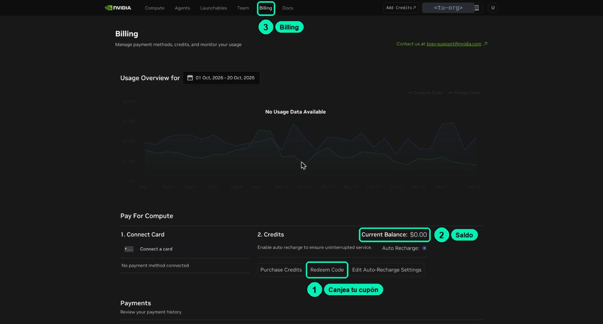
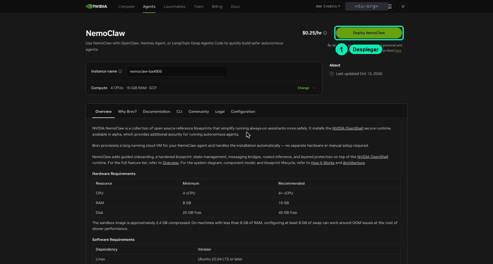
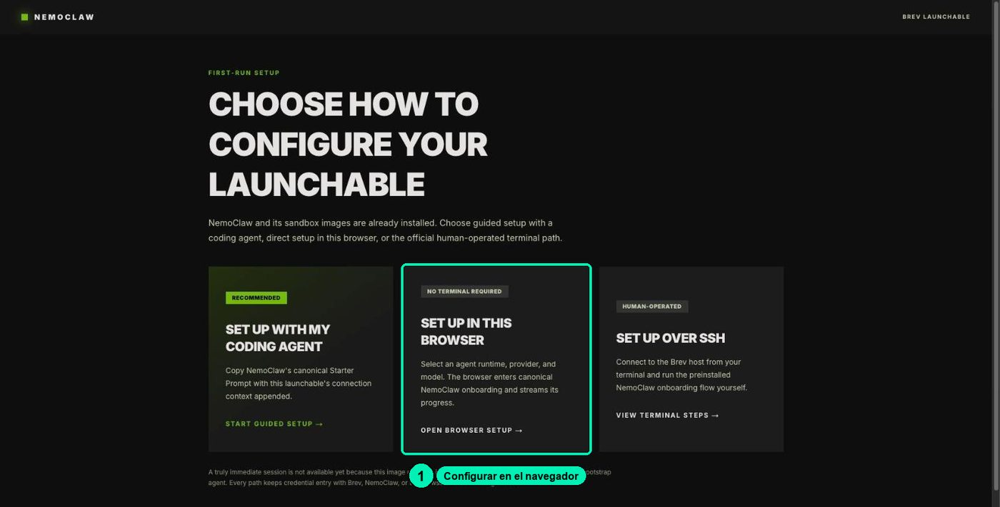
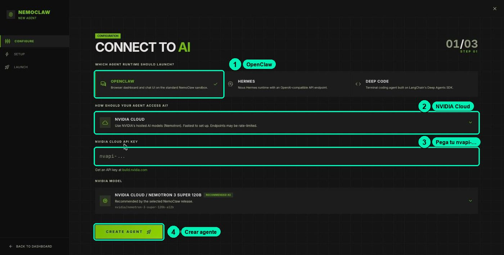
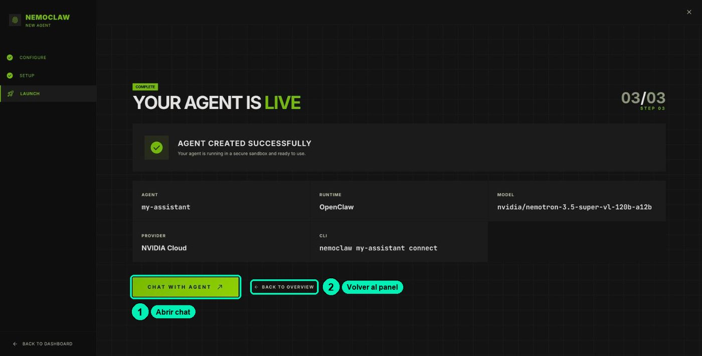

Agentes Seguros con NemoClaw
Agentes Seguros con NemoClawTu laboratorio en Brev
Las prácticas de «Crea tu agente con NemoClaw» y «Seguridad agéntica con OpenShell», y de algunas clases complementarias, se hacen en un laboratorio: una computadora en la nube con NemoClaw ya instalado. Esta página te explica cuánto cuesta, cómo planear tu práctica para que te alcance el crédito de 1 USD, cómo crear el laboratorio y cómo usar su tablero.
No necesitas instalar nada en tu computadora. Todo se hace desde el navegador.
Piénsalo como rentar una oficina por horas: pagas mientras la luz está encendida, pagas por guardar tus cosas aunque la luz esté apagada, y si la entregas, pierdes lo que dejaste adentro.
Lo que necesitas
- Una cuenta de NVIDIA (la misma de build.nvidia.com) para entrar a Brev.
- Tu cupón de 1 USD de crédito.
- Tu API key
nvapi-de la clase 1.2. - Una computadora con navegador de escritorio (Chrome, Edge, Firefox o Safari). El celular no sirve para el laboratorio.
1 · Tu crédito de 1 USD
Qué cuesta y qué no
| Estado de tu instancia | Qué cobra | Costo aprox. | ¿Se conserva tu trabajo? |
|---|---|---|---|
| Running (encendida) | La computadora y el disco | ≈USD 0.25 por hora (la página de la instancia muestra ≈$0.26/hr) | Sí |
| Stopped (detenida) | Solo el disco | ≈USD 0.05 por hora, ≈USD 1.20 al día | Sí |
| Deleted (borrada) | Nada | USD 0 | No, se pierde |
- Con 1 USD tienes unas 4 horas de instancia encendida.
- Detenida también cobra: en un día gasta más que todo tu cupón. Detenerla sirve para pausas cortas, no para dejarla varios días.
- La instancia del curso es solo CPU (4 CPU, 16 GiB de memoria). El modelo de IA corre en la nube de NVIDIA, no en tu instancia.
- Lo que le preguntas al modelo se paga con los créditos de tu cuenta de build.nvidia.com (los de tu API key), no con el crédito de Brev. Las automatizaciones también gastan ahí: una sola ejecución de prueba usó ≈112 000 tokens. No dejes una automatización que se repita cada pocos minutos.
El plan: una sola sentada
Primero mira los videos de «Crea tu agente con NemoClaw» y «Seguridad agéntica con OpenShell». Después enciende la instancia y haz las prácticas de laboratorio seguidas, en una sola sentada. Al terminar, bórrala.
Las prácticas obligatorias son 4.1, 4.2, 4.3, 5.2 y 5.3. Las marcadas (complementaria, sin video) puedes saltarlas: el resto del curso no depende de ellas.
| Clase | Práctica | Tiempo encendida (aprox.) |
|---|---|---|
| 4.1 | Crear el laboratorio y conocer el tablero | ≈30 min |
| 4.2 | Gateway, workspace y memoria de la conversación | ≈20 min |
| 4.3 | Una skill y una automatización | ≈25 min |
| 4.4 (complementaria, sin video) | Hermes en un segundo sandbox | ≈30 min |
| 5.2 | Quién es quién: operador y sandbox | ≈20 min |
| 5.3 | Políticas de red y archivos | ≈25 min |
| 6.1 (complementaria, sin video) | Comparar CLIs de agentes | ≈20 min |
| 6.2 (complementaria, sin video) | Instalar la biblioteca de skills | ≈15 min |
| Total obligatorio (4.1, 4.2, 4.3, 5.2 y 5.3) | ≈2 h 00 min ≈ USD 0.50 | |
| Total con todas las complementarias | ≈3 h 05 min ≈ USD 0.77 |
La 4.4 va entre la 4.3 y la 5.2: si te la saltas, pasa directo de la 4.3 a la 5.2. La 6.1 y la 6.2 van al final, después de la 5.3.
Con solo las obligatorias te sobran unos USD 0.50 por si algo tarda más de lo previsto. Si vas rápido, puedes terminar en ≈1 h 45 min (≈USD 0.44). Con todas las complementarias te sobran unos USD 0.23. Para otra combinación, suma los minutos: cada hora encendida cuesta ≈USD 0.25.
Cinco reglas para que te alcance:
- Mira primero los videos. Así, cuando enciendas la instancia, ya sabes qué vas a hacer en cada clase.
- Haz todo en una sola sentada. Ten a la mano tu API key y estas guías abiertas en otra pestaña.
- Usa Stop solo para pausas cortas. Si tienes que parar, detén la instancia (Stop) y vuelve el mismo día o el siguiente. Nunca la dejes detenida varios días.
- Al terminar tu última práctica, guarda tu trabajo y borra la instancia: Delete. Si no haces las complementarias, es la 5.3; si haces alguna, es la última complementaria que hagas. Es la única forma de que deje de cobrar del todo (ver 5 · Al terminar).
- No actives la recarga automática (auto-recharge) en Billing.
Cómo canjear el cupón y revisar tu saldo
- Entra a https://brev.nvidia.com con tu cuenta de NVIDIA. El menú de arriba tiene Compute, Agents, Launchables, Team, Billing y Docs.
- Arriba a la derecha, revisa el selector de organización. En Brev el crédito es de la organización, no de tu usuario: si tienes varias (la de tu empresa y la personal), elige la tuya antes de canjear y antes de desplegar.
- Haz clic en Billing → Credits → Redeem Code y pega tu cupón. No uses Purchase Credits: ese botón es para comprar.
- Revisa el saldo en la pastilla de saldo de la barra de arriba. Debe decir 1.00 USD en tu organización.

Si se te acaba el crédito: Brev detiene o borra tus instancias. No pierdes la cuenta. Revisa ¿Qué pasa si se me acaban los créditos? y pide ayuda en el foro del curso.
2 · Crea tu laboratorio
Este es el resumen. El paso a paso completo, con lo que verás en cada pantalla, está en la clase 4.1.
- Abre el enlace del launchable de NemoClaw. Verás la máquina (4 CPUs · 16 GiB · GCP) y el botón Deploy NemoClaw. Haz clic en Deploy NemoClaw.

- Ve a Compute. Tu instancia (se llama algo como
nemoclaw-xxxxxx) pasa a Running en más o menos un minuto. Arriba tiene los botones Stop, Delete y un botón verde NemoClaw.

- Haz clic en el botón verde NemoClaw. Se abre una pestaña nueva con una dirección como
https://nemoclaw-<tu-id>.gobrev.dev. Te pide iniciar sesión con NVIDIA: usa la misma cuenta. - La primera vez verás Choose how to configure your launchable. Elige SET UP IN THIS BROWSER («No terminal required») y haz clic en OPEN BROWSER SETUP →.

- En Connect to AI, deja OpenClaw como agente. El proveedor viene en OpenRouter: cámbialo a NVIDIA CLOUD y pega tu key
nvapi-en el campo NVIDIA CLOUD API KEY. Haz clic en CREATE AGENT.

- Espera unos 3 minutos en Building your agent. No recargues la pestaña. Al final verás YOUR AGENT IS LIVE, con tu agente
my-assistant.

- Haz clic en Back to overview para llegar a tu tablero.
3 · Tu tablero
El tablero es la página principal de tu laboratorio (https://nemoclaw-<tu-id>.gobrev.dev/dashboard). Arriba ves el uso de procesador, memoria y disco, y el estado de seguridad (por ejemplo, «20 allowed sites» y «13 network policies»). Abajo hay un panel de registros con filtros All, VM, Gateway y Agent.
En la tarjeta MY-ASSISTANT tienes cuatro botones:
| Botón | Qué abre | Para qué lo usas en el curso |
|---|---|---|
| CHAT WITH AGENT | El chat de OpenClaw, en una pestaña nueva. A la izquierda tiene Home, Dashboards, Automations, Plugins y Sessions. | Conversar con tu agente y crear automatizaciones (clase 4.3). |
| SANDBOX TERMINAL | Una terminal dentro del cuarto del agente (usuario sandbox, carpeta /sandbox). |
Ver el mundo como lo ve el agente. |
| VM TERMINAL | La terminal de operador: la computadora que rodea al cuarto (usuario ubuntu). |
Pegar los comandos de las guías. Desde aquí revisas y controlas al agente. |
| OPENSHELL TUI | El panel del guardia de OpenShell, en modo texto. | Ver la política del sandbox y aprobar o rechazar accesos bloqueados («Seguridad agéntica con OpenShell»). |

Consejos para la terminal de operador (VM TERMINAL)
- Se abre como una ventana encima del tablero. Haz clic dentro del área negra antes de escribir. Si escribes sin hacer clic, las teclas van al tablero y pueden abrir pestañas o no pasar nada.
- Shift + Esc cierra la terminal y lo que esté corriendo en ella. La tecla Esc sola se envía a la terminal.
- Para pegar un comando de la guía: cópialo aquí y pégalo en la terminal con Ctrl + V (en Mac, Cmd + V). Luego presiona Enter.
- Todos los comandos
nemoclawimprimen una líneaExperimentalWarning: SQLite is an experimental feature. Ignórala: no es un error.
Trae los archivos del curso
Varias clases usan archivos del curso (la FAQ de ejemplo, la skill de soporte). Este comando los descarga en la carpeta ~/curso de tu laboratorio. Pégalo una vez en la VM TERMINAL, al empezar:
git clone --depth 1 https://github.com/uncrayon/curso-seguridad-agentes-nemoclaw ~/curso
Después, las guías usan rutas como ~/curso/datos/faq/ o ~/curso/clases/4.3-agentes-siempre-activos/skills/soporte-nemoclaw/.
4 · Si cierras la pestaña o vuelves otro día
Cerrar la pestaña no apaga nada ni borra tu trabajo. Para volver a tu tablero:
- Entra a https://brev.nvidia.com → Compute → tu instancia.
- Si está detenida (Stopped), enciéndela y espera a que diga Running.
- Haz clic en el botón verde NemoClaw.
- Puede que te pida iniciar sesión con NVIDIA otra vez. Es normal: hazlo con la misma cuenta y llegarás a tu tablero.
Si el agente no responde justo después de encender la instancia, espera un par de minutos y revisa el panel de registros del tablero. Si sigue sin responder, ve a la FAQ: conexión con tu laboratorio.
5 · Al terminar
Cuando termines tu última práctica (la 5.3 si no haces las complementarias; si haces alguna, la última que hagas):
- Guarda lo que quieras conservar. Este comando, en la VM TERMINAL, muestra en pantalla tu
SOUL.mdy los reportes que escribió tu agente:
nemoclaw my-assistant exec -- bash -lc 'cd /sandbox/.openclaw/workspace && for f in SOUL.md reportes/*.md; do echo "===== $f"; cat "$f"; done'
Selecciona el texto con el mouse, cópialo y pégalo en un documento tuyo. Si prefieres no usar la terminal, pídele al agente en el chat: «Muéstrame el contenido de SOUL.md», y copia la respuesta. Para bajar a tu computadora una copia completa en un zip (workspace, memoria, skills, tareas e historial), sigue la receta previa del cookbook 6.3. 2. En la consola de Brev: Compute → tu instancia → Delete. Confirma. 3. Revisa en Billing que no quede ninguna instancia cobrando y anota tu saldo.